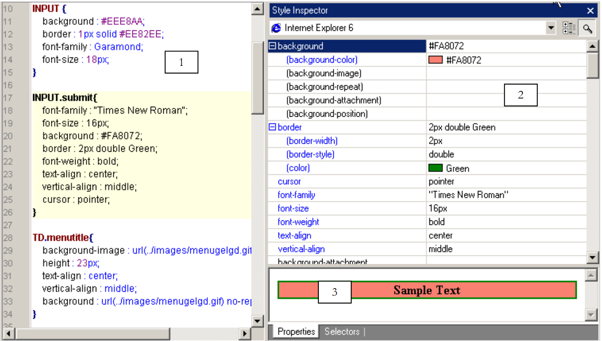
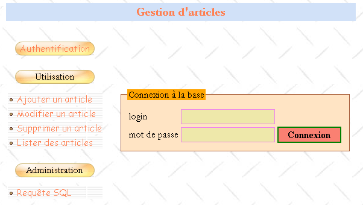
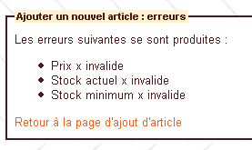
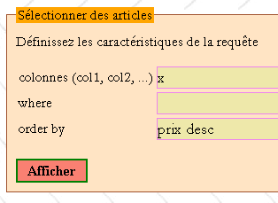
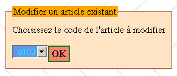
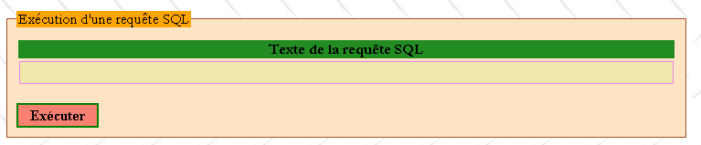

7. Caso práctico: gestión de una base de datos de artículos en la web
Los códigos de este caso práctico están disponibles |ICI|.
Objetivos:
- escribir una clase para la gestión de una base de datos de artículos
- escribir una aplicación web basada en esta clase
- introducir las hojas de estilo
- proponer una metodología de desarrollo básica para aplicaciones web sencillas
- introducir javascript en el navegador del cliente
Créditos: La esencia de este caso práctico se encuentra en el libro «Les cahiers du programmeur - PHP/MySQL», de Jean-Philippe Leboeuf, publicado por la editorial Eyrolles.
7.1. Introducción
Un comerciante desea gestionar los artículos que vende en su tienda. Ya dispone de una aplicación ACCESS que realiza esta tarea, pero le atrae la aventura de la web. Tiene una cuenta con un proveedor de acceso a Internet que permite a sus usuarios instalar scripts en sus carpetas personales. Esto les permite crear sitios web dinámicos. Además, estos mismos clients disponen de una cuenta MySQL que les permite crear tablas que pueden servir de datos a sus scripts PHP. Así, el comerciante tiene una cuenta MySQL con el nombre de usuario admarticles y la contraseña mdparticles. Posee una base de datos dbarticles sobre la que tiene todos los derechos. Nuestro comerciante dispone, por tanto, de los elementos suficientes para poner su gestión de artículos en la web. Con la ayuda de usted, que tiene conocimientos de desarrollo web, se lanza a la aventura.
7.2. La base de datos
Nuestro comerciante elabora el siguiente boceto de la interfaz web de inicio que le gustaría tener:

Habría dos tipos de usuarios:
- administradores que podrían realizar todas las acciones en la tabla de artículos (añadir, modificar, eliminar, consultar, etc.). Estos podrán utilizar todos los elementos del menú anterior. En particular, podrán emitir cualquier consulta SQL a través de option [Requête SQL].
- los usuarios normales (que no son administradores) que tendrían derechos restringidos: derechos para añadir, modificar, eliminar y consultar. Pueden tener solo algunos de estos derechos, por ejemplo, únicamente el derecho de consulta.
Dado que hay varios tipos de usuarios de la base de datos que no tienen los mismos derechos, es necesaria una autenticación. Por eso la página de inicio comienza con ella. Para saber quién es quién y quién tiene derecho a hacer qué, se utilizarán dos tablas: USERS y DROITS. La tabla USERS tendría la siguiente estructura:
 |
|
El contenido de la tabla podría ser el siguiente:

La tabla DROITS especifica los derechos que tienen los usuarios que no son administradores y que figuran en la tabla USERS. Su estructura es la siguiente:
 |
|
El contenido de la tabla podría ser el siguiente:

Observaciones:
- Un usuario U que se encuentre en la tabla USERS y no figure en la tabla DROITS no tiene ningún derecho.
- En nuestro ejemplo, los usuarios solo tendrán acceso a una única tabla, la tabla ARTICLES. Sin embargo, nuestro comerciante, previsor, ha añadido el campo «tabla» a la estructura de la tabla DROITS para poder añadir posteriormente nuevas tablas a su aplicación.
- ¿Por qué gestionar derechos en nuestras propias tablas cuando partimos de la hipótesis de que utilizaremos una base MySQL capaz por sí misma (y mejor que nosotros) de gestionar esos derechos en sus propias tablas? Simplemente porque nuestro comerciante no tiene derechos de administración sobre la base de datos MySQL que le permitirían crear usuarios y otorgarles derechos. No olvidemos, en efecto, que la base MySQL está alojada en un proveedor de acceso y que el comerciante no es más que un simple usuario de la misma sin ningún derecho de administración (por suerte). Sin embargo, posee todos los derechos sobre una base de datos llamada dbarticles, a la que accede por el momento con el nombre de usuario admarticles y la contraseña mdparticles. Es en esta base de datos donde se encuentran todas las tablas de la aplicación.
La tabla ARTICLES recopila la información sobre los artículos vendidos por el comerciante. Su estructura es la siguiente:
 |
|
Su contenido, utilizado inicialmente a modo de prueba, podría ser el siguiente:

7.3. Las limitaciones del proyecto
El comerciante está migrando aquí una aplicación local ACCESS a una aplicación web. No sabe en qué se convertirá esta ni cómo evolucionará. Sin embargo, le gustaría que la nueva aplicación fuera fácil de usar y escalable. Por este motivo, su asesor informático imaginó para él, durante el diseño de las tablas, que podría haber:
- varios usuarios con diferentes derechos: esto permitirá al comerciante delegar ciertas tareas a otras personas sin tener que concederles derechos de administración
- en el futuro, otras tablas además de la tabla ARTICLES
El mismo asesor hace otras propuestas:
- sabe que, en el desarrollo de software, hay que separar claramente las capas de presentación y las capas de procesamiento. La arquitectura de una aplicación web suele ser la siguiente:
 |
La interfaz de usuario es aquí un navegador web, pero también podría ser una aplicación autónoma que, a través de la red, enviara solicitudes HTTP al servicio web y diera formato a los resultados que este le envía. La lógica de la aplicación está formada por los scripts que procesan las solicitudes del usuario, en este caso los scripts PHP. La fuente de datos suele ser una base de datos, pero también puede ser un directorio LDAP o un servicio web remoto. Al desarrollador le conviene mantener una gran independencia entre estas tres entidades para que, si una de ellas cambia, las otras dos no tengan que cambiar o cambien muy poco. El asesor informático del comerciante hace entonces las siguientes propuestas:
- Se colocará la lógica de negocio de la aplicación en una clase PHP. Así, el bloque [Logique applicative] anterior estará compuesto por los siguientes elementos:
 |
En el bloque [Logique Applicative], se podrá distinguir
- el bloque [IE=Interface d'Entrée], que es la puerta de entrada a la aplicación. Es el mismo independientemente del tipo de cliente.
- el bloque [Classes métier], que agrupa las clases necesarias para la lógica de la aplicación. Son independientes del cliente.
- el bloque de generadores de páginas de respuesta [IS1 IS2 ... IS=Interface de Sortie]. Cada generador se encarga de dar formato a los resultados proporcionados por la lógica de la aplicación para un tipo de cliente determinado: código HTML para un navegador o un teléfono WAP, código XML para una aplicación autónoma, etc.
Este modelo garantiza una buena independencia respecto a los clients. Tanto si cambia el cliente como si se desea modificar la forma de presentar los resultados, serán los generadores de salida [IS] los que habrá que crear o adaptar.
- En una aplicación web, la independencia entre la capa de presentación y la capa de procesamiento puede mejorarse mediante el uso de hojas de estilo. Estas controlan la presentación de una página web en un navegador. Para cambiar esta presentación, basta con cambiar la hoja de estilo asociada. No es necesario tocar la lógica de procesamiento. Por lo tanto, aquí se utilizará una hoja de estilo.
- En el diagrama anterior, es la clase de negocio la que actuará como interfaz con la fuente de datos. Suponemos que esta fuente es aquí una base de datos MySQL. Para permitir la migración a otra base de datos, utilizaremos la biblioteca PEAR, que ofrece clases de acceso a bases de datos independientes del tipo real de estas. Así, si nuestro comerciante se hace lo suficientemente rico como para instalar un servidor web IIS de Microsoft en su empresa, podrá sustituir la base MySQL por SQL Server sin tener que modificar (o muy poco) la clase de negocio.
7.4. La clase «artículos»
La clase de artículos podría definirse de la siguiente manera:
<?php
// clase de artículos que opera sobre una base de datos de artículos compuesta por las siguientes tablas
// artículos: (código, nombre, precio, stockActuel, stockMinimum)
// usuarios: (nombre de usuario, contraseña, administrador)
// derechos: (nombre de usuario, tabla, añadir, modificar, eliminar, consultar)
// es el usuario de la clase que debe proporcionar el nombre de usuario y la contraseña que permiten realizar cualquier operación en la base de datos
// por lo que ya tiene todos los derechos sobre la base de datos. Esto implica que no hay que tomar
// tomar precauciones de seguridad especiales aquí
// bibliotecas
require_once 'DB.php';
class articles{
// atributos
var $sDSN; // la cadena de conexión
var $sDatabase; // el nombre de la base
var $oDB; // conexión a la base de datos
var $aErreurs; // lista de errores
var $oRésultats; // resultado de una consulta SELECT
var $connecté; // valor booleano que indica si se está conectado o no a la base
var $sQuery; // la última consulta ejecutada
var $sUser; // identidad del usuario de la conexión
var $bAdmin; // verdadero si el usuario es administrador
var $dDroits; // el diccionario de sus derechos tabla ->> array (consultar, añadir, eliminar, modificar)
// fabricante
function articles($dDSN,$sUser,$sMdp){
// $dDSN: diccionario que define la conexión que se debe establecer
// $dDSN['sgbd']: el tipo de SGBD al que hay que conectarse
// $dDSN['host']: el nombre del servidor que lo aloja
// $dDSN['database']: el nombre de la base de datos a la que hay que conectarse
// $dDSN['admin']: el nombre de usuario del propietario de la base de datos a la que hay que conectarse
// $dDSN['mdpadmin']: su contraseña
// $sUser: el nombre de usuario del usuario que desea utilizar la base de datos de artículos
// $sMdp: su contraseña
// crea en $oDB una conexión a la base de datos definida por $dDSN bajo la identidad de $dDSN['admin']
// si la conexión se realiza correctamente y el usuario $sUser es autenticado
// carga los derechos en $bAdmin y $dDroits los derechos del usuario $sUser
// introduce en $sDSN la cadena de conexión a la base de datos
// establece en $sDataBase el nombre de la base de datos a la que se conecta
// establece $connecté como verdadero
// si la conexión falla o si el usuario $sUser no se identifica correctamente
// añade los mensajes de error correspondientes a la lista $aErreurs
// cierra la conexión si es necesario
// marca $connecté como falso
...
}//constructor
// ------------------------------------------------------------------
function connect(){
// (re)conexión a la base
...
}//conectarse
// ------------------------------------------------------------------
function disconnect(){
// se cierra la conexión con la base $sDSN
...
}//desconectar
// -------------------------------------------------------------------
function execute($sQuery,$bAdmin){
// $sQuery: consulta a ejecutar
// $bAdmin: verdadero si se solicita la ejecución como administrador
...
}//ejecutar
// --------------------------------------------------------------------------
function addArticle($dArticle){
// añade un artículo $dArticle (código, nombre, precio, stockActuel, stockMinimum) a la tabla de artículos
...
}//añadir
// ----------------------------------------------------------------------
function modifyArticle($dArticle){
// modifica un artículo $dArticle (código, nombre, precio, stockActuel, stockMinimum) de la tabla de artículos
...
}//actualización
// ----------------------------------------------------------------------
function deleteArticle($sCode){
// elimina un artículo de la tabla de artículos
// cuyo código es $sCode
...
}//eliminar
// ----------------------------------------------------------------------
function vérifierArticle(&$dArticle){
// comprueba la validez de un artículo $dArticle (código, nombre, precio, stockActuel, stockMinimum)
...
}//verificar
// --------------------------------------------------------------------------
function selectArticles($dQuery){
// ejecuta una consulta SELECT sobre la tabla de artículos
// esta tiene tres componentes
// lista de columnas en $dQuery['colonnes']
// filtro en $dQuery['where']
// orden de presentación en $dQuery['orderby']
...
}//selectArticles
// --------------------------------
function existeArticle($sCode){
// devuelve TRUE si el artículo de código $sCode existe en la tabla de artículos
...
}//existeArticle
// --------------------------------------
function existeUser($sUser,$sMdp){
// verificación de la existencia del usuario $sUser con la contraseña $sMdp
// devuelve (int $iErreur, string $sAdmin, tabla hash $dDroits)
// $iErreur = -1 para cualquier error de funcionamiento de la base; en ese caso, se rellena la lista $aErreurs
// $iErreur = 1 si no se encuentra al usuario (ausente o contraseña incorrecta)
// $iErreur = 2 si el usuario existe pero no tiene ningún derecho en la tabla de derechos
// $iErreur = 3 si el usuario existe y es administrador
// $iErreur = 0 si el usuario existe y no es administrador
// $sAdmin="y" si el usuario existe y es administrador ($iErreur==3), de lo contrario es igual a la cadena vacía
// $dDroits es el diccionario de derechos del usuario si no es administrador ($iErreur==0)
// de lo contrario, es una tabla vacía
// las claves del diccionario son las tablas sobre las que el usuario tiene derechos
// el valor asociado a esta tabla es, a su vez, un diccionario en el que las claves son los derechos
// (consultar, añadir, modificar, eliminar) y los valores son las cadenas «y» (sí) o «n» (no), según el caso
...
}//existeUser
// --------------------------------------
function getCodes(){
// devuelve la tabla de códigos
....
}//getCodes
}//clasifica
?>
Comentarios
- La clase «articles» utiliza la biblioteca PEAR::DB para acceder a la base de datos, de ahí el comando
Esta inclusión supone que el script DB.php se encuentre en uno de los directorios de option include_path del archivo de configuración de PHP.
- El generador necesita saber a qué base de datos se conecta y con qué identidad. Esta información se le proporciona en el diccionario $dDSN. Recordemos que la hipótesis inicial era que la base se llamaba dbarticles y que pertenecía a un usuario llamado admarticles con la contraseña mdparticles. Recordemos también que esta aplicación permite varios usuarios con diferentes derechos. Aquí hay una ambigüedad que hay que aclarar. La conexión se abre efectivamente con la identidad de admarticles y, al final, es con esta identidad con la que se realizarán todas las operaciones en la base dbarticles, ya que es el único nombre que conoce el SGBD MySQL que tiene los derechos suficientes para gestionar la base dbarticles. Para «simular» la existencia de diferentes usuarios, haremos que el usuario admarticles trabaje con los derechos del usuario cuyo nombre de usuario ($sUser) y contraseña ($sMdp) se pasan como parámetros al constructor. Así, antes de realizar una operación en la base de datos de artículos, se comprobará que el usuario ($sUser, $sMdp) tenga los derechos necesarios para llevarla a cabo. Si es así, será el usuario admarticles quien la realice en su nombre.
- El nombre de usuario y la contraseña del administrador de la base de datos de artículos deben pasarse al constructor. Es una precaución sensata. Si se incluyeran «de forma fija» en el código de la clase estos dos datos, cualquier usuario de la clase podría hacerse pasar fácilmente por administrador de la base de datos de artículos. De hecho, una clase PHP no está protegida. Asimismo, el atributo $bAdmin de la clase, que indica si el usuario ($sUser, $sMdp) para el que se trabaja es administrador o no, podría muy bien establecerse directamente desde el exterior, como en el siguiente ejemplo:
$oArticles=new articles($dDSN,$sUser,$sMdp)
// aquí $sUser ha sido reconocido como un usuario no administrador de la base
$oArticle->bAdmin=TRUE;
// ahora $sUser se ha convertido en administrador
PHP no es JAVA ni C# y una clase PHP no es más que una estructura de datos un poco más avanzada que un diccionario, pero que no ofrece la seguridad de una clase real en la que el atributo bAdmin se hubiera declarado privado o protegido, lo que imposibilitaría su modificación desde el exterior. Dado que el usuario de la clase debe conocer el nombre de usuario y la contraseña del administrador de la base de datos de artículos, solo este último puede utilizar la clase. Por lo tanto, la operación anterior ya no tiene ningún interés para él. La clase está ahí únicamente para facilitarle el desarrollo. Una consecuencia importante es que no es necesario tomar precauciones de seguridad. Una vez más, quien utiliza la clase de artículos es necesariamente el administrador de la base de datos de artículos.
- La clase gestiona los errores de conexión a la base de datos o cualquier otro error de forma única, rellenando el atributo $aErreurs con el mensaje o mensajes de error. Por lo tanto, tras cada operación, el usuario de la clase debe comprobar esta lista.
- Los métodos addArticle, updateArticle, deleteArticle y selectArticles se derivan directamente del diseño de la interfaz web presentado anteriormente. De hecho, corresponden a las opciones del menú propuesto. Los métodos addArticle y modifyArticle se basan en el método vérifierArticle para verificar que el artículo que se va a añadir o modificar contiene datos correctos. Siguiendo la misma línea, el método existeArticle permite verificar que no se va a añadir un artículo que ya existe. Se podría prescindir de este método si se utiliza una tabla de artículos en la que el código es la clave primaria. En ese caso, será el propio SGBD el que señale el fallo de la adición por duplicado. Probablemente lo indicará con un mensaje de error poco legible y en inglés.
- Un artículo que se vaya a modificar o eliminar se identificará por su código, que es único. El método getCodes permite obtener todos estos códigos.
- El método disconnect cierra la conexión con la base de datos, conexión que se abrió durante la construcción del objeto. No se aprecia aquí la utilidad del método connect, que volverá a crear una conexión con la base de datos. Esto permitirá abrir y cerrar dicha conexión a voluntad con un mismo objeto. La utilidad solo se hace evidente en combinación con la aplicación web. Esta creará un objeto «artículos» que memorizará en una sesión. Aunque esta será capaz de conservar la mayoría de los atributos del objeto a lo largo de los sucesivos intercambios cliente-servidor, no es capaz, sin embargo, de mantener el atributo que representa la conexión abierta. Por lo tanto, esta deberá reabrirse en cada nuevo intercambio cliente-servidor. Se solicitará una conexión persistente para que la conexión abierta se almacene en un grupo de conexiones y permanezca abierta de forma permanente. Así, cuando el script solicite una nueva conexión, esta se recuperará del grupo de conexiones. De este modo, se obtiene el mismo resultado que si la sesión hubiera podido memorizar la conexión abierta.
- El método existeUser permite al constructor saber si el usuario $sUser, identificado por la contraseña $sMdp, existe realmente. En caso afirmativo, el método permite saber si es administrador o no (indicado en la tabla USERS) y almacena esta información en el atributo $bAdmin. Si no es administrador, el método recuperará sus derechos de la tabla DROITS y los colocará en el atributo $dDroits, que es un diccionario de doble indexación: $dDroits[$table][$droit] es igual a 'y» si el usuario $sUser tiene el derecho $droit sobre la tabla $table y vale «n» en caso contrario.
Escriba la clase «artículos». Los accesos a la base de datos se realizarán mediante la biblioteca PEAR::DB, que permite prescindir del tipo exacto de la base.
7.5. La estructura de la aplicación WEB
Ahora que tenemos la clase «de negocio» para la gestión de la base de artículos, podemos utilizarla en diferentes entornos. Aquí se propone utilizarla en una aplicación web. Descubrámosla a través de estas diferentes páginas:
7.5.1. La página de inicio de la aplicación
Volvamos a la página de inicio ya presentada:
1234
Todas las páginas de la aplicación tendrán la estructura anterior, la de una tabla de dos filas y tres columnas que comprende cuatro zonas:
- la zona 1 forma la primera línea de la tabla. Está reservada al título, acompañado eventualmente de una imagen. Las tres columnas de la línea están aquí fusionadas.
- La segunda línea tiene tres zonas, una por columna:
- la zona 2 contiene las opciones del menú. A su vez, contiene una tabla de una columna y varias filas. Las opciones del menú se colocan en las filas de la tabla.
- la zona 3 está vacía y solo sirve para separar las zonas 2 y 4. Se podría haber procedido de otra manera para realizar esta separación.
- La zona 4 es la que contiene la parte dinámica de la página. Es esta parte la que cambia de una acción a otra, mientras que las demás permanecen idénticas.
El script PHP que genera esta página tipo se llamará main.php y podría ser el siguiente:
<html>
<head>
<title>Gestion d'articles</title>
<link type="text/css" href="<?php echo $dConfig['urlPageStyle'] ?>" rel="stylesheet" />
</head>
<body background="<?php echo $dConfig['urlBackGround'] ?>">
<table>
<tr height="60">
<td colspan="3" align="left" valign="top" >
<h1><?php echo $main["title"] ?></h1>
</td>
</tr>
<tr>
<td>
<table>
<tr>
<td class="menutitle" >
<a href="<?php echo $main["liens"]["login"] ?>" ?>Authentification</a>
</td>
</tr>
<tr>
<td><br /></td>
</tr>
<tr>
<td class="menutitle" >
Utilisation
</td>
</tr>
<tr height="10"></tr>
<tr>
<td class="menublock" >
<img alt="-" src="../images/radio.gif" />
<a href="<?php echo $main["liens"]["addArticle"] ?>" ?>
Ajouter un article
</a>
</td>
</tr>
<tr>
<td class="menublock" >
<img alt="-" src="../images/radio.gif" />
<a href="<?php echo $main["liens"]["updateArticle"] ?>">
Modifier un article
</a>
</td>
</tr>
<td class="menublock" >
<img alt="-" src="../images/radio.gif" />
<a href="<?php echo $main["liens"]["deleteArticle"] ?>">
Supprimer un article
</a>
</td>
</tr>
<tr>
<td class="menublock" >
<img alt="-" src="../images/radio.gif" />
<a href="<?php echo $main["liens"]["selectArticle"] ?>">
Lister des articles
</a>
</td>
</tr>
<tr>
<td><br /></td>
</tr>
<tr>
<td class="menutitle" >
Administration
</td>
</tr>
<tr height="10"></tr>
<tr>
<td class="menublock" >
<img alt="-" src="../images/radio.gif" />
<a href="<?php echo $main["liens"]["sql"] ?>" >
Requête SQL
</a>
</td>
</tr>
</table>
</td>
<td>
<img alt="/" src="../images/pix.gif" width="10" height="1" />
</td>
<td>
<fieldset>
<legend><?php echo $main["légende"] ?></legend>
<?php
include $main["contenu"];
?>
</fieldset>
</td>
</tr>
</table>
</body>
</html>
Las zonas configuradas de la página se han resaltado en la lista anterior. La página tipo se configura de varias maneras:
- mediante un diccionario $main con las siguientes claves:
- title: título que se colocará en la zona 1 de la página
- enlaces: diccionarios de los enlaces que se generarán en la columna del menú. Estos enlaces están asociados a las opciones del menú de la zona 2
- contenido: url de la página que se mostrará en la zona 4
- mediante un diccionario $dConfig que recopila información extraída de un archivo de configuración de la aplicación denominado config.php
- por clases que forman parte de la hoja de estilo utilizada por la página:
La página utiliza aquí las siguientes clases de estilo:
- menutitle: para un option principal del menú
- menublock: para un option secundario del menú
Cambiar uno de los parámetros modifica el aspecto de la página. Así, cambiar $main['title'] modificará el título de la zona 1.
7.5.2. El procesamiento típico de una solicitud de un cliente
El cliente interactúa con la aplicación a través de los enlaces de la zona 2 de la página tipo. Estos enlaces serán del siguiente tipo:
indica la acción en curso entre las siguientes:
| |||||||||||
una acción puede realizarse en varios pasos: indica el paso actual | |||||||||||
token de sesión cuando esta se ha iniciado: permite al servidor recuperar la información almacenada en la sesión durante los intercambios anteriores |
Del mismo modo, el atributo «action» en los formularios tendrá la misma forma. Por ejemplo, en la página de inicio hay un formulario de inicio de sesión en la zona 4. La etiqueta HTML de este formulario se define de la siguiente manera:
El procesamiento de la solicitud del cliente lo lleva a cabo el script principal de la aplicación, denominado apparticles.php. Su función es construir la respuesta para el cliente. Siempre procederá de la misma manera:
- gracias al nombre de la acción y a la fase en curso, delegará la solicitud a una función especializada. Esta procesará la solicitud y generará la página de respuesta adecuada. Para cada solicitud del cliente, puede haber varias páginas de respuesta posibles: página1, página2, ..., páginaN. Estas páginas contienen información que debe ser calculada por la función. Se trata, por tanto, de páginas parametrizadas. Serán generadas por los scripts página1.php, página2.php, ..., páginaN.php.
- En aras de la homogeneidad, las partes variables de las páginas que se mostrarán en la zona 4 de la página tipo también se colocarán en el diccionario $main.
Supongamos que, en respuesta a una solicitud, el servidor debe enviar la página pagex.php al cliente. Procederá de la siguiente manera:
- colocará en el diccionario $main los valores necesarios para la página pagex.php
- introducirá en $main['contenu'], que designa el URL de la página que se va a mostrar en la zona 4 de la página tipo, el URL de pagex.php
- solicitará la visualización de la página tipo con la instrucción
La página tipo se mostrará entonces con el código del script pagex.php en la zona 4, que se evaluará para generar el contenido de la zona 4. Recordemos que esta es una simple celda de una tabla. Por lo tanto, el código HTML generado por pagex.php comience con las etiquetas <HTML>, <HEAD>, <BODY>, ... Estas ya se han emitido al principio de la página tipo. A continuación se muestra, a modo de ejemplo, cómo podría ser el script login.php que genera la zona 4 de la página de inicio:
<form name="frmLogin" method="post" action="<?php echo $main["post"] ?>">
<table>
<tr>
<td>login</td>
<td><input type="text" value="<?php echo $main["login"] ?>" name="txtLogin" class="text"></td>
</tr>
<tr>
<td>mot de passe</td>
<td><input type="password" value="" name="txtMdp" class="text"></td>
<td><input type="submit" value="Connexion" class="submit"></td>
</tr>
</table>
</form>
Se observa que la página:
- se reduce a un formulario
- está configurada tanto por el diccionario $main como por la hoja de estilo.
7.5.3. El archivo de configuración
Siempre es recomendable configurar las aplicaciones al máximo para evitar tener que modificar el código simplemente porque, por ejemplo, se ha decidido cambiar la ruta de un script o de una imagen. La aplicación principal apparticles.php cargará, por tanto, un archivo de configuración config.php al iniciarse:
En este archivo se incluirán directivas de configuración destinadas a PHP e inicializaciones de variables globales:
<?php
// configuración de php
ini_set("register_globals","off");
ini_set("display_errors","off");
ini_set("expose_php","off");
ini_set("session.use_cookies","0"); // sin cookies
// configuración básica de artículos
$dConfig["DSN"]=array(
"sgbd"=>"mysql",
"admin"=>"admarticles",
"mdpadmin"=>"mdparticles",
"host"=>"localhost",
"database"=>"dbarticles"
);
// url de las páginas
$dConfig['urlBackGround']="../images/standard.jpg";
$dConfig["urlPageStyle"]="mystyle.css";
$dConfig["urlAppArticles"]="apparticles.php";
$dConfig["urlPageMain"]="main.php";
$dConfig["urlPageLogin"]="login.php";
$dConfig["urlPageErreurs"]="erreurs.php";
$dConfig["urlPageInfos"]="infos.php";
$dConfig["urlPageAddArticle"]="addarticle.php";
$dConfig["urlPageUpdateArticle1"]="updatearticle1.php";
$dConfig["urlPageUpdateArticle2"]="updatearticle2.php";
$dConfig["urlPageDeleteArticle1"]="deletearticle1.php";
$dConfig["urlPageDeleteArticle2"]="deletearticle2.php";
$dConfig["urlPageSelectArticle1"]="selectarticle1.php";
$dConfig["urlPageSelectArticle2"]="selectarticle2.php";
$dConfig["urlPageSQL1"]="sql1.php";
$dConfig["urlPageSQL2"]="sql2.php";
$dConfig["urlPageSQL3"]="sql3.php";
// enlaces de la página principal
$main["liens"]["login"]="$sUrlAppArticles?action=authentifier&phase=0";
$main["liens"]["addArticle"]="$sUrlAppArticles?action=addArticle&phase=0";
$main["liens"]["updateArticle"]="$sUrlAppArticles?action=updateArticle&phase=0";
$main["liens"]["deleteArticle"]="$sUrlAppArticles?action=deleteArticle&phase=0";
$main["liens"]["selectArticle"]="$sUrlAppArticles?action=selectArticle&phase=0";
$main["liens"]["sql"]="$sUrlAppArticles?action=sql&phase=0";
// se guarda $main en la configuración
$dConfig["main"]=$main;
?>
7.5.4. La hoja de estilo asociada a la página tipo
Hemos visto que la respuesta del servidor tenía un formato único: main.php. Se habrá observado que este script genera una página sin formato, desprovista de efectos de presentación. Esto es positivo por varias razones:
- el desarrollador no tiene que preocuparse por la presentación gráfica de la página que crea. De hecho, no necesariamente tiene las habilidades para crear páginas gráficas atractivas. Aquí puede concentrarse por completo en el código.
- se facilita el mantenimiento de los scripts. Si estos incluyeran atributos de presentación, ni la estructura del código ni la de la presentación quedarían claras. El aspecto gráfico de las hojas suele delegarse a un diseñador gráfico. A este probablemente no le gustaría tener que buscar en un script que no entiende dónde están los atributos de presentación que debe modificar.
Sin embargo, hay que prestar atención al aspecto gráfico de las páginas. De hecho, es eso lo que atrae a los internautas a un sitio web. Aquí, la presentación se delega a una hoja de estilo. La página main.php indica en su código la hoja de estilo que se debe utilizar para mostrarla:
<head>
<title>Gestion d'articles</title>
<link type="text/css" href="<?php echo $dConfig['urlPageStyle'] ?>" rel="stylesheet" />
</head>
La hoja de estilo utilizada en este documento es la siguiente:
BODY {
background : url(../images/standard.jpg);
border : 2px none #FFDAB9;
font-family : Garamond;
font-size : 16px;
margin-left : 0px;
padding-left : 20px;
}
INPUT {
background : #EEE8AA;
border : 1px solid #EE82EE;
font-family : Garamond;
font-size : 18px;
}
INPUT.submit{
font-family : "Times New Roman";
font-size : 16px;
background : #FA8072;
border : 2px double Green;
font-weight : bold;
text-align : center;
vertical-align : middle;
cursor : pointer;
}
TD.menutitle{
background-image : url(../images/menugelgd.gif);
height : 23px;
text-align : center;
vertical-align : middle;
background : url(../images/menugelgd.gif) no-repeat center;
}
TD.menublock{
background : url(../images/bandegrismenugd.gif) repeat-x;
text-align : left;
vertical-align : middle;
}
A {
font-family : "Comic Sans MS";
color : #FF7F50;
font-size : 15px;
text-decoration : none;
}
A:HOVER {
background : #FFA07A;
color : Red;
}
FIELDSET {
border : 1px solid #A0522D;
background : #FFE4C4;
margin : 10px 10px 10px 10px;
padding-left : 10px;
padding-right : 10px;
padding-bottom : 10px;
}
LEGEND{
background : #FFA500;
}
TH {
background : #228B22;
text-align : center;
vertical-align : middle;
}
TD.libellé{
border : 1px solid #008B8B;
color : #339966;
}
H1 {
font : bold 20px/30px Garamond;
color : #FF7F50;
background : #D1E1F8;
background-attachment : fixed;
text-align : center;
vertical-align : middle;
font-family : Garamond;
}
SELECT.TEXT {
background : #6495ED;
text-align : center;
color : Aqua;
}
No entraremos en detalles sobre esta hoja de estilo. La aceptaremos tal cual. Más adelante veremos cómo crearla y modificarla. Existen programas para ello. No obstante, señalemos la función de los atributos de presentación utilizados en la hoja:
Atributo: | regula la presentación de la etiqueta HTML: |
<BODY> | |
<H1> (Encabezado 1) | |
<A> (Ancla) | |
establece los atributos de presentación del ancla cuando el usuario pasa el ratón por encima | |
<FIELDSET> - esta etiqueta no es reconocida por todos los navegadores | |
<LEGEND> - esta etiqueta no es reconocida por todos los navegadores | |
<INPUT> | |
<INPUT class="TEXT"> | |
<INPUT class="SUBMIT"> | |
<TH> (Encabezado de tabla) | |
<TD class="menutitle"> (Tabla Data) | |
<TD class="menublock"> | |
<TD class="libellé"> |
Veamos con un ejemplo cómo se pueden escribir estas reglas de presentación. En este ejemplo, utilizaremos el software TopStyle Lite, disponible de forma gratuita en URL http://www.bradsoft.com. Una vez cargada la hoja de estilo, aparece una ventana con tres zonas:
- una zona de edición de texto. Los atributos de presentación se pueden definir manualmente siempre que se conozcan las reglas de escritura de las hojas de estilo, que siguen un estándar denominado CSS (Cascading Style Sheets).
- la zona 2 muestra las propiedades editables del atributo que se está creando. Es el método más sencillo. Evita tener que conocer el nombre exacto de los atributos de presentación, que son muy numerosos
- La zona 3 muestra el aspecto visual del atributo que se está creando
 |
En la zona 1 anterior, copiamos y pegamos el atributo INPUT.submit en un atributo INPUT.fantaisie. Este atributo fijará la presentación de la etiqueta HTML <INPUT class="fantaisie">
 |
Utilicemos la zona 2 para modificar algunas de las propiedades del atributo INPUT.fantaisie:
 |
A partir de ahora, cualquier etiqueta <INPUT ... class="fantaisie"> que se encuentre en una página HTML asociada a la hoja de estilo anterior se mostrará como en el ejemplo de la zona 3 anterior.
Las hojas de estilo tienen una gran utilidad. Su uso permite cambiar el «aspecto» de una aplicación web modificando únicamente un único elemento: su hoja de estilo. Las hojas de estilo no son reconocidas por los navegadores antiguos. La directiva <link ..> que se muestra a continuación será ignorada por algunos de ellos:
<head>
<title>Gestion d'articles</title>
<link type="text/css" href="<?php echo $dConfig['urlPageStyle'] ?>" rel="stylesheet" />
</head>
En nuestra aplicación, esto dará como resultado la siguiente página de inicio:

Aquí tenemos una página mínima sin elementos gráficos. Podría ser peor. Algunas versiones de navegadores reconocen las hojas de estilo, pero las interpretan mal. En ese caso, podemos tener una página desfigurada e inutilizable. Por lo tanto, surge la cuestión del tipo de navegador del cliente. Existen técnicas que ayudan a determinar el tipo de navegador del cliente. No son totalmente fiables. Por lo tanto, se pueden escribir diferentes hojas de estilo para diferentes navegadores o incluso escribir un version sin hoja de estilo para los navegadores que las ignoran. Esto, por supuesto, complica la tarea de desarrollo. Este importante problema se ha ignorado aquí.
Con las hojas de estilo, se puede imaginar ofrecer un entorno personalizado a los usuarios de nuestra aplicación. Podríamos presentarles una página que les ofreciera varios estilos de presentación posibles. Podrían elegir el que más les convenga. Esta elección podría registrarse en una base de datos. Cuando el usuario vuelva a conectarse, se podría iniciar la aplicación con la hoja de estilo que haya elegido como preferencia.
7.5.5. El módulo de entrada de la aplicación
Los clients solo conocerán de la aplicación su módulo de entrada: apparticles.php. Las líneas generales de su funcionamiento son las siguientes:
- Se recupera y analiza la solicitud del cliente. Esta puede estar configurada o no. Cuando está parametrizada, los parámetros esperados son los siguientes: action=[action]&phase=[phase]&PHPSESSID=[PHPSESSID]
- Si la solicitud no está configurada o si los parámetros recuperados no son los esperados, el servidor envía como respuesta la página de autenticación (nombre de usuario, contraseña). Tan pronto como el usuario se haya identificado correctamente, se crea una sesión. Esta servirá para almacenar información sobre todos los intercambios cliente-servidor.
- Si una solicitud se reconoce correctamente, es procesada por un módulo que depende tanto de la acción como de la fase en curso.
- Todos los accesos a la base de datos se realizan a través de la clase de negocio articles.php.
- El procesamiento de una solicitud siempre finaliza con el envío al cliente de la página main.php, en la que se ha especificado en $main['contenu'] el URL de la página que se debe colocar en la zona 4 de la página tipo.
El esqueleto del script apparticles.php podría ser el siguiente:
<?php
// gestión de una tabla de artículos
include "config.php";
include "articles.php";
// medida a tomar
$sAction=$_POST["action"] ? $_POST["action"] : $_GET["action"] ? $_GET["action"] : "authentifier";
$sAction=strtolower($sAction);
// fase eventual
$sPhase=$_POST["phase"] ? $_POST["phase"] : $_GET["phase"] ? $_GET["phase"] : "0";
// sesión
session_start();
$dSession=$_SESSION["session"];
// ¿hay una sesión en curso?
if(! isset($dSession)){
// autenticación del usuario
if($sAction=="authentifier" && $sPhase=="0") authentifier_0($dConfig);
if($sAction=="authentifier" && $sPhase=="1") authentifier_1($dConfig);
if($sAction=="authentifier" && $sPhase=="2") authentifier_2($dConfig);
// solicitud incorrecta
authentifier_0($dConfig);
}//if - no hay sesión
// se recupera la sesión
$dSession=unserialize($dSession);
// procesamiento de la solicitud
// ----- autenticación
if($sAction=="authentifier" && $sPhase=="0") authentifier_0($dConfig);
if($sAction=="authentifier" && $sPhase=="1") authentifier_1($dConfig);
if($sAction=="authentifier" && $sPhase=="2") authentifier_2($dConfig);
// ----- añadir artículo
if($sAction=="addarticle" && $sPhase=="0") addArticle_0($dConfig,$dSession);
if($sAction=="addarticle" && $sPhase=="1") addArticle_1($dConfig,$dSession);
if($sAction=="addarticle" && $sPhase=="2") addArticle_2($dConfig,$dSession);
// ----- actualización de artículo
if($sAction=="updatearticle" && $sPhase=="0") updateArticle_0($dConfig,$dSession);
if($sAction=="updatearticle" && $sPhase=="1") updateArticle_1($dConfig,$dSession);
if($sAction=="updatearticle" && $sPhase=="2") updateArticle_2($dConfig,$dSession);
if($sAction=="updatearticle" && $sPhase=="3") updateArticle_3($dConfig,$dSession);
// ----- eliminación de artículo
if($sAction=="deletearticle" && $sPhase=="0") deleteArticle_0($dConfig,$dSession);
if($sAction=="deletearticle" && $sPhase=="1") deleteArticle_1($dConfig,$dSession);
if($sAction=="deletearticle" && $sPhase=="2") deleteArticle_2($dConfig,$dSession);
// ----- consulta de artículos
if($sAction=="selectarticle" && $sPhase=="0") selectArticle_0($dConfig,$dSession);
if($sAction=="selectarticle" && $sPhase=="1") selectArticle_1($dConfig,$dSession);
if($sAction=="selectarticle" && $sPhase=="2") selectArticle_2($dConfig,$dSession);
// ----- envío de una solicitud SQL
if($sAction=="sql" && $sPhase=="0") sql_0($dConfig,$dSession);
if($sAction=="sql" && $sPhase=="1") sql_1($dConfig,$dSession);
if($sAction=="sql" && $sPhase=="2") sql_2($dConfig,$dSession);
// acción errónea: se muestra la página de autenticación
session_destroy();
authentifier_0($dConfig,"0");
...
?>
Cabe destacar los siguientes puntos:
- las funciones que gestionan una solicitud concreta del cliente terminan con la generación de la página de respuesta y con una instrucción exit que finaliza la ejecución del script apparticles.php. En otras palabras, no se «vuelve» de estas funciones.
- Las funciones admiten uno o dos parámetros:
- $dConfig es un diccionario que contiene información procedente del archivo de configuración config.php. Todas las funciones lo utilizan.
- $dSession es un diccionario que contiene información de sesión. Solo existe cuando se ha creado la sesión, es decir, después de que la autenticación del usuario haya tenido éxito. Por eso las funciones de autenticación no tienen este parámetro.
7.5.6. La página de errores
Toda aplicación de software debe saber gestionar correctamente los errores que puedan surgir. Una aplicación web no es una excepción a esta regla. Aquí, cuando se produzca un error, colocaremos la siguiente página de errores.php en la zona 4 de la página tipo:
Les erreurs suivantes se sont produites :
<ul>
<?php
for($i=0;$i<count($main["erreurs"]);$i++){
echo "<li>".$main["erreurs"][$i]."</li>\n";
}//para
?>
</ul>
<a href="<?php echo $main["href"] ?>"><?php echo $main["lien"] ?></a>
Muestra la lista de errores definida en $main['erreurs']. Además, puede ofrecer un enlace de retorno, generalmente a la página que precedió a la página de errores. Este enlace se definirá mediante un texto $main['lien'] y un URL $main['href']. Para evitar este enlace, basta con introducir la cadena vacía en $main['lien']. A continuación se muestra un ejemplo de página de errores en caso de que el usuario se identifique incorrectamente:

7.5.7. La página de información
A veces se querrá dar al usuario una simple información como respuesta, por ejemplo, que su identificación se ha realizado correctamente. Para ello, se utilizará la siguiente página infos.php:
Para mostrar una información en respuesta a una solicitud de un cliente,
- se colocará la información en $main['infos']
- se colocará el URL de infos.php en $main['contenu']
A continuación se muestra, por ejemplo, la información devuelta cuando el usuario se ha identificado correctamente:

7.6. El funcionamiento de la aplicación
Ahora tenemos una idea clara de la estructura general de la aplicación que debemos escribir. Nos queda por presentar los recorridos del usuario por la aplicación, las acciones que puede realizar y las respuestas que recibe del servidor. Una vez hecho esto, podremos escribir las funciones que gestionan las diferentes solicitudes de un cliente. A continuación, presentaremos el funcionamiento de la aplicación a través de las páginas que se muestran al usuario en respuesta a algunas de estas acciones. En cada caso, especificaremos los siguientes puntos:
acción inicial del usuario que ha dado lugar a la respuesta mostrada | |
los parámetros enviados por el navegador del cliente al servidor en respuesta a la acción manual del usuario | |
el script que genera la zona 4 de la página tipo |
7.6.1. La autenticación
Antes de poder utilizar la aplicación, el usuario deberá identificarse mediante la siguiente página:

1 - solicitud inicial de URL artículos.php 2 - Uso de la autenticación del menú 3 - Solicitud directa de los artículos URL.php con parámetros erróneos | |
1 - sin parámetros 2 - action=authentifier?phase=0 3 - una lista de parámetros erróneos | |
login.php |
En la página de inicio, el enlace [Ajouter un article] tiene el siguiente formato: action=addarticle?phase=0. Los demás enlaces tienen el mismo formato con action=(authentifier, updatearticle, deletearticle, selectarticle, sql). El usuario rellena el formulario y utiliza el botón [Connexion]:

La respuesta es la siguiente:

botón [Connexion] | |
action=authentifier?phase=1 | |
infos.php |
El título de la página se ha modificado para indicar el nombre de usuario y sus derechos de administrador/usuario. Además, todos los enlaces de la zona 2 se han modificado para reflejar que se ha iniciado una sesión. Se les ha añadido el parámetro PHPSESSID=[PHPSESSID].
Si el servidor no ha podido identificar al cliente, este recibirá una respuesta diferente:

botón [Connexion] | |
action=authentifier?phase=1 | |
errores.php |
El enlace [Retour à la page de login] es un enlace a URL artículos.php?action=autenticar&phase=2&txtLogin=x. Este enlace redirige al cliente a la página de inicio de sesión, donde el campo de inicio de sesión se rellena con el valor del parámetro txtLogin:

enlace [Retour à la page de login] | |
action=authentifier?phase=2&txtLogin=x | |
login.php |
7.6.2. Añadir un artículo
El enlace del menú [Ajouter un article] lleva a la siguiente página en la zona 4 de la página tipo:

enlace [Ajouter un article] | |
action=addArticle?phase=0&PHPSESSID=[PHPSESSID] | |
addarticle.php |
El usuario rellena los campos y envía todo al servidor con el botón [Ajouter], que es de tipo submit. No se realiza ninguna verificación por parte del cliente. Es el servidor quien las realiza. Puede enviar como respuesta una página de errores como en el ejemplo siguiente:
Solicitud | Respuesta |
 |  |
botón [Ajouter] | |
action=addArticle?phase=1&PHPSESSID=[PHPSESSID] | |
errores.php |
El enlace [Retour à la page d'ajout d'article] permite volver a la página de introducción de datos:
Solicitud | Respuesta |
|
enlace [Retour à la page d'ajout d'article] | |
action=addArticle?phase=2&PHPSESSID=[PHPSESSID] | |
artículo.php |
Si la adición se realiza sin errores, el usuario recibe un mensaje de confirmación:
Solicitud | Respuesta |
 |  |
botón [Ajouter] | |
action=addArticle?phase=1&PHPSESSID=[PHPSESSID] | |
infos.php |
7.6.3. Consulta de artículos
El enlace del menú [Lister des articles] lleva a la siguiente página en la zona 4 de la página tipo:

enlace del menú [Lister des articles] | |
action=selectArticle?phase=0&PHPSESSID=[PHPSESSID] | |
select1.php |
Se emitirá una consulta select [colonnes] from articles where [where] orderby [orderby] sobre la tabla de artículos, donde [colonnes], [where] y [orderby] son el contenido de los campos anteriores. Por ejemplo:
Solicitud |
 |
Respuesta |
 |
botón [Afficher] | |
action=selectArticle?phase=1&PHPSESSID=[PHPSESSID] | |
select2.php |
La solicitud puede ser errónea, en cuyo caso el cliente recibe una página de error:
Solicitud |
 |
Respuesta |
 |
En ambos casos (con o sin errores), el enlace [Retour à la page de sélection d'articles] permite volver a la página select1.php:
Solicitud |
 |
Respuesta |
 |
enlace [Retour à la page de sélection d'articles] | |
action=selectArticle?phase=2&PHPSESSID=[PHPSESSID] | |
select1.php |
7.6.4. Modificación de artículos
El enlace del menú [Modifier un article] lleva a la siguiente página en la zona 4 de la página tipo:

enlace de menú [Modifier un article] | |
action=updateArticle?phase=0&PHPSESSID=[PHPSESSID] | |
updatearticle1.php |
Se selecciona el código del artículo que se desea modificar en la lista desplegable y se introduce [OK] para modificar el artículo con ese código:
Solicitud | Respuesta |
 |  |
botón [OK] | |
action=updateArticle?phase=1&PHPSESSID=[PHPSESSID] | |
updatearticle2.php |
Una vez obtenida la ficha del artículo que se va a modificar, el usuario puede realizar sus modificaciones:
Solicitud | Respuesta |
 |  |
botón [Modifier] | |
action=updateArticle?phase=2&PHPSESSID=[PHPSESSID] | |
infos.php |
El usuario puede cometer errores al realizar la modificación:
Solicitud | Respuesta |
 |  |
El enlace [Retour à la page de modification d'article] permite volver a la página de introducción de datos:
enlace [Retour à la page de modification d'article] | |
action=updateArticle?phase=3&PHPSESSID=[PHPSESSID] | |
updatearticle2.php |
7.6.5. Eliminación de un artículo
El enlace del menú [Supprimer un article] lleva a la siguiente página en la zona 4 de la página tipo:

enlace del menú [Supprimer un article] | |
action=deleteArticle?phase=0&PHPSESSID=[PHPSESSID] | |
deletearticle1.php |
El usuario selecciona el código del artículo que desea eliminar en una lista desplegable:
Solicitud | Respuesta |
 |  |
botón [OK] | |
action=deleteArticle?phase=1&PHPSESSID=[PHPSESSID] | |
deletearticle2.php |
El usuario confirma la eliminación del artículo con el botón [Supprimer]:
Solicitud | Respuesta |
 |  |
botón [Supprimer] | |
action=deleteArticle?phase=2&PHPSESSID=[PHPSESSID] | |
infos.php |
7.6.6. Envío de solicitudes de administrador
El enlace del menú [Requête SQL] lleva a la siguiente página en la zona 4 de la página tipo:

enlace de menú [Requête SQL] | |
action=sql?phase=0&PHPSESSID=[PHPSESSID] | |
sql1.php |
Se escribe el texto de la consulta SQL en el campo de entrada y se utiliza el botón [Exécuter] para ejecutarla. Solo un administrador puede emitir estas consultas, como se muestra en el siguiente ejemplo:
Solicitud | Respuesta |
 |  |
botón [Exécuter] | |
action=sql?phase=1&PHPSESSID=[PHPSESSID] | |
errores.php |
El enlace [Retour à la page d'émission de requêtes SQL] permite volver a la página de introducción de datos:
enlace [Retour à la page d'émission de requêtes SQL] | |
action=sql?phase=2&PHPSESSID=[PHPSESSID] | |
sql1.php |
Si se es administrador y la consulta es sintácticamente correcta:
Solicitud |
 |
se obtiene el resultado de la consulta:
Respuesta |
 |
botón [Exécuter] | |
action=sql?phase=1&PHPSESSID=[PHPSESSID] | |
sql2.php |
Se pueden enviar solicitudes de actualización de las tablas:
Solicitud |
 |
Respuesta |
 |
botón [Exécuter] | |
action=sql?phase=1&PHPSESSID=[PHPSESSID] | |
infos.php |
7.6.7. Tareas pendientes
Escribir los scripts y funciones necesarios para la aplicación:
identificador | tipo | rol |
script | El punto de entrada del procesamiento de solicitudes de clients | |
función | procesa la solicitud configurada con acción=autenticar&fase=0 | |
función | procesa la solicitud configurada con los parámetros action=authentifier&phase=1 | |
función | procesa la solicitud configurada con los parámetros action=authentifier&phase=2 | |
función | procesa la solicitud configurada con los parámetros action=addArticle&phase=0 | |
función | procesa la solicitud configurada action=addArticle&phase=1 | |
función | procesa la solicitud configurada action=addArticle&phase=2 | |
función | procesa la solicitud configurada action=updatearticle&phase=0 | |
función | procesa la solicitud configurada action=updatearticle&phase=1 | |
función | procesa la solicitud configurada action=updatearticle&phase=2 | |
función | procesa la solicitud configurada con action=updatearticle&phase=3 | |
función | procesa la solicitud configurada con action=deletearticle&phase=0 | |
función | procesa la solicitud configurada action=deletearticle&phase=1 | |
función | procesa la solicitud configurada con los parámetros action=deletearticle&phase=2 | |
función | procesa la solicitud configurada action=selectarticle&phase=0 | |
función | procesa la solicitud configurada action=selectarticle&phase=1 | |
función | procesa la solicitud configurada action=selectarticle&phase=2 | |
función | procesa la solicitud configurada con action=sql&phase=0 | |
función | procesa la solicitud configurada action=sql&phase=1 | |
función | procesa la solicitud configurada action=sql&phase=2 | |
script | genera la página tipo | |
script | genera la página de inicio de sesión | |
script | genera la página de errores | |
script | genera la página de información | |
script | genera la página para añadir un artículo | |
script | genera la página 1 de la modificación de un artículo | |
script | genera la página 2 de la modificación de un artículo | |
script | genera la página 1 de la eliminación de un artículo | |
script | genera la página 2 de la eliminación de un artículo | |
script | genera la página 1 de la selección de artículos | |
script | genera la página 2 de la selección de artículos | |
script | genera la página 1 del envío de solicitudes | |
script | genera la página 2 de la emisión de solicitudes |
7.7. Mejorar la aplicación
En este punto, tenemos una aplicación que hace lo que debe hacer con una ergonomía aceptable. Vamos a mejorarla en varios aspectos:
- la SGBD
- su seguridad
- su aspecto
- su rendimiento
7.7.1. Cambiar el tipo de base de datos
Nuestro estudio partía de la base de que el SGBD utilizado era MySQL. Cambie a SGBD y demuestre que la única modificación que hay que realizar es en la definición de la variable $dDSN en el archivo de configuración config.php.
7.7.2. Mejorar la seguridad
Al desarrollar una aplicación web, nunca se debe dar por sentado que el cliente es un navegador y que la solicitud que nos envía está controlada por el formulario que le enviamos antes de dicha solicitud. Cualquier programa puede ser cliente de una aplicación web y, por lo tanto, enviar cualquier solicitud, parametrizada o no, a la aplicación. Por lo tanto, esta debe verificarlo todo.
Si nos fijamos en el código del script apparticles.php, vemos
- que no puede realizarse ninguna acción, salvo la autenticación, sin una sesión. Esta solo existe si el usuario ha logrado autenticarse. Recordemos que una sesión se identifica mediante una cadena de caracteres bastante larga denominada token de sesión y que tiene la siguiente forma: 176a43609572907333118333edf6d1fb. Este token puede enviarse a la aplicación de diversas formas, por ejemplo, utilizando un URL configurado:
apparticles.php?PHPSESSID=176a43609572907333118333edf6d1fb.
Un programa que solicitara repetidamente el URL anterior, variando el token de forma aleatoria con la esperanza de dar con el correcto, tardaría probablemente muchos días en generar la combinación correcta, dado que el número de combinaciones posibles es enorme. Para entonces, como la sesión tiene una duración limitada, es muy probable que ya haya finalizado. Otro riesgo sería que el token, al transmitirse sin cifrar por la red, fuera interceptado. El riesgo es real. Por lo tanto, se puede utilizar una conexión cifrada entre el servidor y su cliente.
- una vez iniciada la sesión, solo se permiten determinadas acciones. Un URL configurado con action=tricher&phase=0&PHPSESSID=[PHPSESSID] sería rechazado, ya que la acción «tricher» no es una acción autorizada. Cuando los parámetros (acción, fase) no se reconocen, nuestra aplicación responde con la página de autenticación.
Sin embargo, la aplicación no comprueba si las acciones autorizadas se encadenan correctamente. Por ejemplo, las dos acciones siguientes:
- action=addArticle&phase=0&PHPSESSID=[PHPSESSID]
- action=updateArticle&phase=1&PHPSESSID=[PHPSESSID]
son dos acciones autorizadas. Sin embargo, la acción 2 no está autorizada a seguir a la acción 1.
¿Cómo seguir la secuencia de URL solicitadas por el navegador del cliente?
Podemos ayudarnos de dos variables PHP: $_SERVER['REQUEST_URI] y $_SERVER['HTTP_REFERER], que son dos datos enviados por los navegadores clients en sus encabezados HTTP.
$_SERVER['REQUEST_URI]: Es la URI solicitada por el cliente. Por ejemplo
$_SERVER['HTTP_REFERER]: Es el URL que se visualizaba en el navegador antes del nuevo URL que está solicitando el navegador (el URI anterior). Por ejemplo, si el navegador que visualizó el URI mencionado anteriormente realiza una nueva solicitud a un servidor, la variable $_SERVER['HTTP_REFERER'] de este tendrá como valor
Para comprobar que dos acciones de nuestra aplicación se suceden en el orden correcto, podemos proceder de la siguiente manera:
Durante la acción 1:
- anotamos la URI solicitada (URI1) y la anotamos en la sesión
Durante la acción 2:
- se recupera el HTTP-REFERER de la acción 2. A partir de ahí, se deduce el URI (URI2) del URL que se visualizó previamente en el navegador que realiza la solicitud.
- Se recupera el URI URI1 que estaba almacenado en la sesión y que es el URI de la acción solicitada previamente al servidor
- Si la acción 2 sigue a la acción 1, entonces debe cumplirse que URI2 = URI1. Si no fuera así, se rechazaría la acción solicitada y se mostraría la página de autenticación.
- Se anota en la sesión el URI URI2 de la acción en curso para verificar la siguiente acción. Y así sucesivamente.
He aquí un ejemplo. Tras la autenticación, se selecciona el enlace [Ajouter un article]:

El URL de esta página es:
http://localhost:81/st/php/articles/gestion/articles8/apparticles.php?action=addArticle&phase=0&PHPSESSID=006a63e6027f16c70b63cdae93405eeb
Directamente en el campo [Adresse] del navegador, modificamos el URL de la siguiente manera:
http://localhost:81/st/php/articles/gestion/articles8/apparticles.php?action=deleteArticle&phase=1&PHPSESSID=006a63e6027f16c70b63cdae93405eeb
A continuación, obtenemos la página de autenticación:

Esto merece una explicación. Cuando se solicita un URL escribiendo directamente su identidad en el campo de dirección del navegador, este no envía el encabezado HTTP_REFERER. Por lo tanto, nuestra aplicación no encuentra allí el URI de la acción anterior, URI, que había memorizado en la sesión. A continuación, devuelve la página de autenticación como respuesta.
Este mecanismo es eficaz para los navegadores, pero no para un cliente programado. Este puede enviar el encabezado HTTP_REFERER que desee. Por lo tanto, puede «engañar» diciendo que ha pasado por tal paso cuando en realidad no lo ha hecho. Por lo tanto, hay que asegurarse de que se respeta la secuencia de pasos. Así, si la acción solicitada es action=addArticle&phase=1 (introducción de datos), entonces la acción anterior debe ser necesariamente action=deleteArticle&phase=0 (solicitud inicial de la página de introducción de datos) o action=addArticle&phase=2 (vuelta a la introducción de datos tras una adición errónea). Del mismo modo, si la acción solicitada es action=addArticle&phase=2 (añadir), entonces la acción anterior debe ser action=addArticle&phase=1 (introducción). Se puede obligar al usuario a respetar estas secuencias.
Mientras que el primer mecanismo es general y puede aplicarse a cualquier aplicación, el segundo requiere una codificación específica para cada aplicación y es más pesado: hay que revisar todas las acciones posibles del usuario y sus secuencias. Estas últimas se pueden memorizar en un diccionario, como muestra el código siguiente:
// autenticación
$dPrec['authentifier']['0']=array();
$dPrec['authentifier']['1']=array(
array('action'=>'authentifier','phase'=>'0'),
array('action'=>'authentifier','phase'=>'2')
);
$dPrec['authentifier']['2']=array(
array('action'=>'authentifier','phase'=>'1'),
);
// añadir artículo
$dPrec['addarticle']['0']=array();
$dPrec['addarticle']['1']=array(
array('action'=>'addarticle','phase'=>'0'),
array('action'=>'addarticle','phase'=>'2')
);
$dPrec['addarticle']['2']=array(
array('action'=>'addarticle','phase'=>'1'),
);
// modificación de artículo
$dPrec['updatearticle']['0']=array();
$dPrec['updatearticle']['1']=array(
array('action'=>'updatearticle','phase'=>'0'),
);
$dPrec['updatearticle']['2']=array(
array('action'=>'updatearticle','phase'=>'1'),
array('action'=>'updatearticle','phase'=>'3')
);
$dPrec['updatearticle']['3']=array(
array('action'=>'updatearticle','phase'=>'2'),
);
// eliminación de artículo
$dPrec['deletearticle']['0']=array();
$dPrec['deletearticle']['1']=array(
array('action'=>'deletearticle','phase'=>'0'),
);
$dPrec['deletearticle']['2']=array(
array('action'=>'deletearticle','phase'=>'1'),
);
// selección de artículos
$dPrec['selectarticle']['0']=array();
$dPrec['selectarticle']['1']=array(
array('action'=>'selectarticle','phase'=>'0'),
array('action'=>'selectarticle','phase'=>'2')
);
$dPrec['selectarticle']['2']=array(
array('action'=>'selectarticle','phase'=>'1'),
);
// solicitud de administrador
$dPrec['sql']['0']=array();
$dPrec['sql']['1']=array(
array('action'=>'sql','phase'=>'0'),
array('action'=>'sql','phase'=>'2')
);
$dPrec['sql']['2']=array(
array('action'=>'sql','phase'=>'1'),
);
$dPrec['action']['phase'] es una tabla que contiene las acciones que pueden preceder a la acción y la fase que sirven de índice para el diccionario. Estas acciones previas también se representan mediante un diccionario con dos claves: «acción» y «fase». Si una acción puede ir precedida de cualquier acción, entonces $dPrec['action']['phase'] será una tabla vacía. La ausencia de una acción en el diccionario significa que no está permitida. Consideremos la acción «autenticar» anterior:
// autenticación
$dPrec['authentifier']['0']=array();
$dPrec['authentifier']['1']=array(
array('action'=>'authentifier','phase'=>'0'),
array('action'=>'authentifier','phase'=>'2')
);
$dPrec['authentifier']['2']=array(
array('action'=>'authentifier','phase'=>'1'),
);
El código anterior significa que la acción action=authentifier&phase=0 puede ir precedida de cualquier acción, que action=authentifier&phase=1 puede ir precedida de action=authentifier&phase=0 o de action=authentifier&phase=2 y que action=authentifier&phase=2 puede ir precedida de la acción action=authentifier&phase=1.
Escriba la siguiente función:
// ---------------------------------------------------------------
function enchainementOK(&$dConfig, &$dSession, $sAction, $sPhase){
// comprueba si la acción en curso ($sAction, $sPhase) puede seguir a la acción anterior
// almacenada en $dSession['précédent']
// el diccionario de encadenamientos permitidos está en $dConfig['précédents']
// devuelve TRUE si la concatenación es posible, FALSE en caso contrario
....
Esta función permite a la aplicación principal verificar que la secuencia de acciones es correcta:
<?php
// gestión de una tabla de artículos
include "config.php";
include "articles.php";
// sesión
session_start();
$dSession=$_SESSION["session"];
// acción a realizar
$sAction=$_POST["action"] ? $_POST["action"] : $_GET["action"] ? $_GET["action"] : "authentifier";
$sAction=strtolower($sAction);
// fase eventual de la acción
$sPhase=$_POST["phase"] ? $_POST["phase"] : $_GET["phase"] ? $_GET["phase"] : "0";
// ¿hay alguna sesión en curso?
if(! isset($dSession)){
// autenticación del usuario
if($sAction=="authentifier" && $sPhase=="0") authentifier_0($dConfig);
if($sAction=="authentifier" && $sPhase=="1") authentifier_1($dConfig);
if($sAction=="authentifier" && $sPhase=="2") authentifier_2($dConfig);
// acción anómala
authentifier_0($dConfig);
}//if - no hay sesión
// se recupera la sesión
$dSession=unserialize($dSession);
// ¿Es normal la secuencia de acciones?
if( ! enchainementOK($dConfig,$dSession,$sAction,$sPhase)){
// secuencia anómala
authentifier_0($dConfig);
}//if
// procesamiento de las acciones
if($sAction=="authentifier"){
if($sPhase=="0") authentifier_0($dConfig);
if($sPhase=="1") authentifier_1($dConfig);
if($sPhase=="2") authentifier_2($dConfig);
}//if
if($sAction=="addarticle"){
...
7.7.3. Evolucionar el «aspecto»
Recordemos que una de las condiciones establecidas al estudiar esta aplicación era que debía ser evolutiva. Supongamos que, al cabo de unas semanas, nos damos cuenta de que hay que mejorar la ergonomía de la aplicación. Modifique la aplicación de tal manera que cambien la estructura y la presentación de la página tipo. Las modificaciones se realizarán en dos lugares:
- en el script main.php, que define la estructura de la página tipo. Actualice esta.
- en la hoja de estilo que determina el «aspecto» de la aplicación. Modifíquela.
7.7.4. Mejorar el rendimiento
Por el momento, hemos optado por un navegador cliente ligero: no hace nada más que la presentación. Se le puede hacer realizar procesamiento incluyendo scripts en las páginas web que se le envían. Estos pueden estar en diferentes lenguajes, en particular vbscript y javascript. Internet Explorer y Netscape dominan el mercado de los navegadores en una proporción cercana al 60/40. Por otra parte, IE solo existe en el ámbito de Windows y no en Unix, por ejemplo, donde predomina Netscape. Netscape no ejecuta de forma nativa los scripts vbscript, mientras que ambos navegadores ejecutan los scripts javascript. Dado que Netscape sigue ocupando una cuota significativa del mercado de los navegadores, deben evitarse los scripts vbscript. Por lo tanto, es javascript el que se utiliza generalmente en los scripts del lado del cliente.
Se delegan en los scripts del lado del cliente aquellos procesos en los que el servidor no tiene que intervenir. En nuestra aplicación, sería conveniente que el navegador del cliente solo enviara una solicitud al servidor después de haberla verificado. Así, no tiene sentido enviar al servidor una solicitud de autenticación si el usuario ha dejado el campo [login] vacío en el formulario de autenticación. Es preferible avisar al usuario de que su solicitud es errónea:

Cabe señalar que esto no impedirá que el servidor compruebe que el campo de inicio de sesión no está vacío, ya que su cliente no es necesariamente un navegador y, por lo tanto, es posible que la comprobación anterior no se haya realizado. Suponer que el cliente es un navegador supone un riesgo importante para la seguridad de la aplicación.
Repase los distintos momentos en los que el navegador envía información al servidor y, cuando esta pueda verificarse, escriba una o varias funciones javascript que permitan al navegador comprobar la validez de la información antes de enviarla al servidor.
Retomando el ejemplo anterior, el script login.php que genera la página de autenticación queda así:
<script language="javascript">
function check(){
// se comprueba que haya un inicio de sesión
with(document.frmLogin){
champs=/^\s*$/.exec(txtLogin.value);
if(champs!=null){
// sin inicio de sesión
alert("Vous n'avez pas indiqué de login");
txtLogin.focus();
return;
}//if
// los datos están ahí: se envían al servidor
submit();
}//con
}//comprobación
</script>
<form name="frmLogin" method="post" action="<?php echo $main["post"] ?>">
<table>
<tr>
<td>login</td>
<td><input type="text" value="<?php echo $main["login"] ?>" name="txtLogin" class="text"></td>
</tr>
<tr>
<td>mot de passe</td>
<td><input type="password" value="" name="txtMdp" class="text"></td>
<td><input type="button" onclick="check()" value="Connexion" class="submit"></td>
</tr>
</table>
</form>
7.8. Para profundizar
Para terminar, señalamos algunas pistas para profundizar en este caso práctico:
- sería interesante ver si la página tipo de esta aplicación podría convertirse en una clase. Esta podría utilizarse entonces en otras aplicaciones.
- nuestra aplicación se adapta bien a clients de tipo navegador, pero menos a clients de tipo «Aplicación autónoma». Estas deben:
- crear una conexión tcp con el servidor
- «comunicarse» con él
- analizar sus respuestas HTML para encontrar la información deseada, ya que el cliente autónomo probablemente no estará interesado en el código HTML de presentación destinado a los navegadores.
Sería interesante que nuestra aplicación generara XML en lugar de HTML. Sus clients podrían entonces ser indistintamente navegadores (bastante recientes, eso sí) o aplicaciones autónomas. Estas últimas no tendrían ninguna dificultad para encontrar la información que buscan, ya que la respuesta XML del servidor no contendría ninguna información de presentación, solo contenido.
- Sin duda, habría que prestar atención a los accesos simultáneos a la base de datos de artículos. Hay al menos dos puntos que aclarar:
- ¿gestiona correctamente el SGBD utilizado por la aplicación el acceso simultáneo a un mismo artículo? Por ejemplo, ¿qué ocurre si dos usuarios modifican el mismo artículo al mismo tiempo (pulsan el botón [Modifier] al mismo tiempo)? Probablemente dependa del SGBD subyacente.
- Actualmente, nuestra aplicación no admite accesos simultáneos. Sin embargo, la base de datos debería mantenerse en un estado coherente, aunque cabe esperar algunas sorpresas. Consideremos la siguiente secuencia de eventos:
- el usuario U1 entra para modificar un artículo
- el usuario U2 inicia la eliminación del mismo artículo poco después
- cada una de las dos acciones requiere intercambios cliente-servidor. Dependiendo de la forma de trabajar de cada uno, el usuario U2 puede terminar su trabajo antes que U1. Cuando este último termine sus modificaciones y las valide mediante [Modifier], obtendrá la página de información como respuesta, en la que SGBD le indicará que [0 ligne(s) ont été modifiées], ya que la página que quería modificar ha sido eliminada entretanto. Sin duda, el usuario se sorprenderá. Desde el punto de vista de la ergonomía, sería preferible mostrar una página que indicara mejor el error. Por otra parte, se podría considerar ofrecer al usuario acceso exclusivo a un artículo tan pronto como este entre en fase de actualización. A otro usuario que quisiera actualizar el mismo artículo se le respondería que ya hay otra actualización en curso. Esto supondrá un problema si el primer usuario tarda en validar su actualización: los demás quedarán bloqueados. Hay que encontrar soluciones que dependerán en gran medida de las capacidades del SGBD utilizado. Oracle, por ejemplo, tiene más capacidades en este ámbito que MySQL.